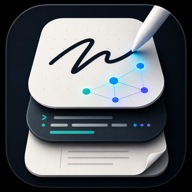

InkLayer is offline
Reconnect to load the app shell. Vault files remain local-first on this device, and sync will resume only after you open InkLayer again.
Try opening InkLayer again
Reconnect to load the app shell. Vault files remain local-first on this device, and sync will resume only after you open InkLayer again.
Try opening InkLayer again